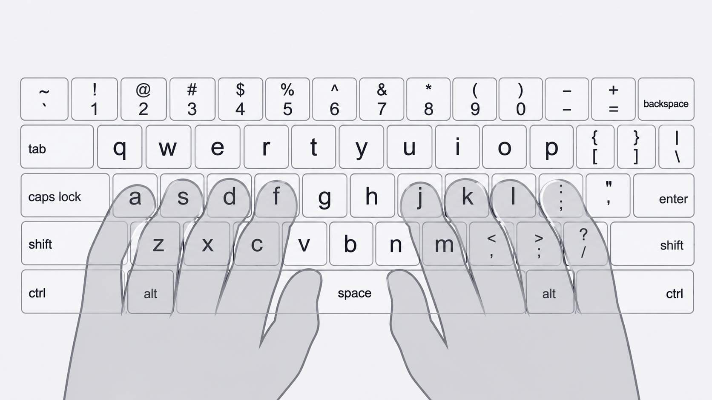
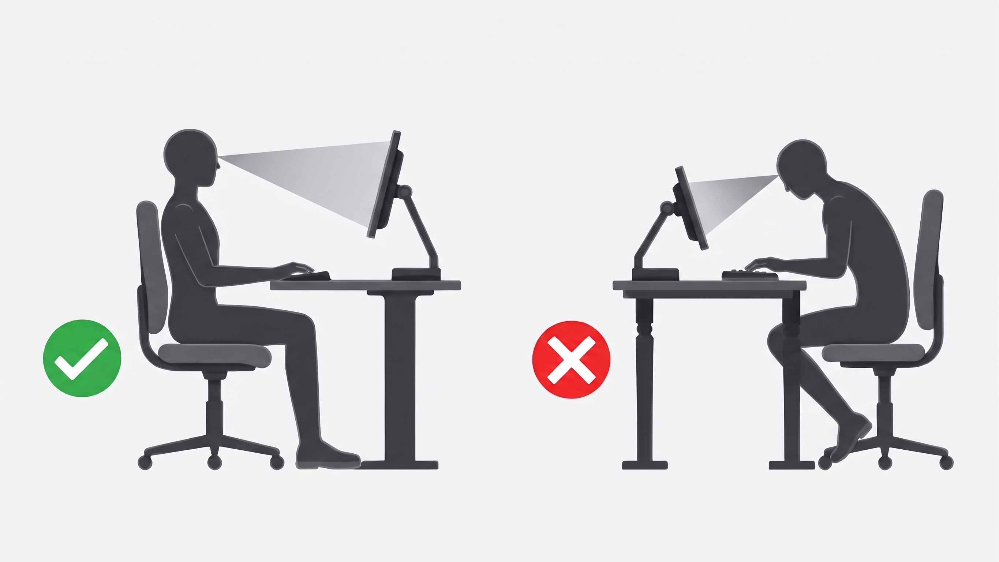

1. How to Type Faster
Master the Home Row: Rest your fingers on A S D F and J K L ;. Always return to this position.
Don't Look at Your Hands: Looking at the keyboard breaks your muscle memory. Trust your fingers and look only at the screen.

Focus on Accuracy: Speed means nothing if you have to backspace every other word. Slow down and aim for 100% accuracy first.
Use Rhythm, Not Bursts: Try to type at a steady, even pace. Smooth typing is faster than typing in jerky, unpredictable bursts.
2. How to Type Healthier (Ergonomics)
Straight Wrists: Keep your wrists flat and floating, not resting on the desk or bending up/down.
Posture: Sit up straight with your back against the chair. Adjust your screen so it is at eye level.

Relax Your Shoulders: Tension in your shoulders travels down to your fingers. Take a deep breath and drop your shoulders.
Light Touch: You don't need to smash the keys. Use a light, gentle touch for speed and finger health.
3. The 20-20-20 Rule
Rest Your Eyes: Every 20 minutes, look at something 20 feet away for 20 seconds.
Stretch: Periodically stretch your fingers, hands, and forearms to prevent carpal tunnel syndrome.
Ready to go back? Back to typing